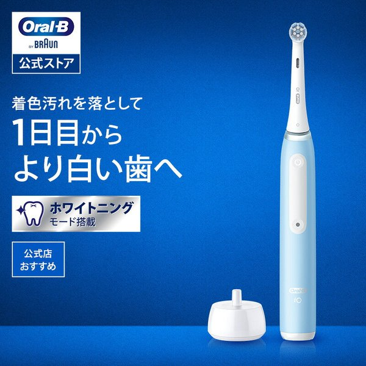
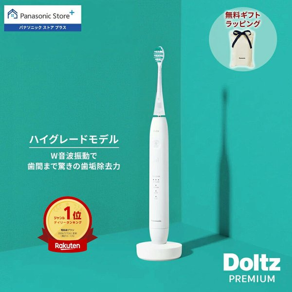
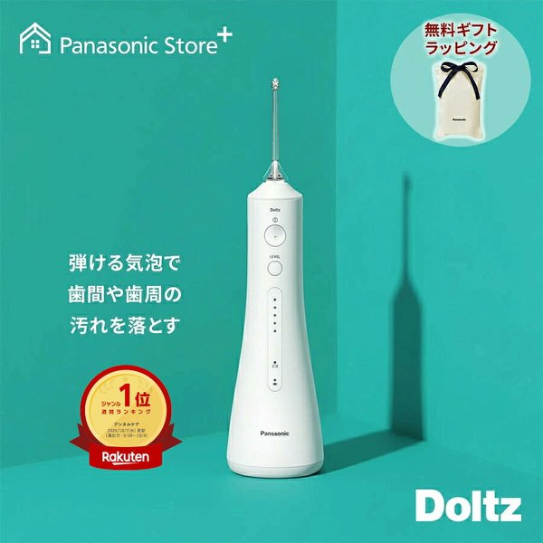
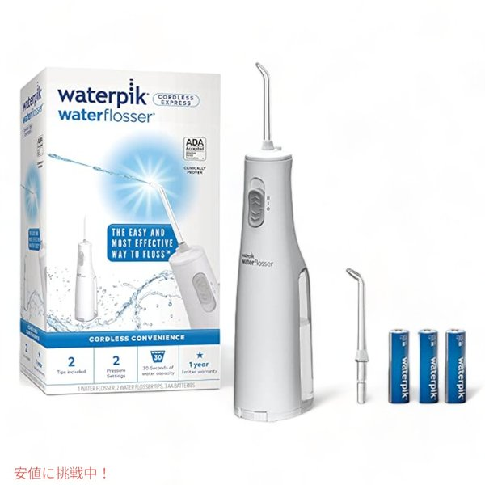
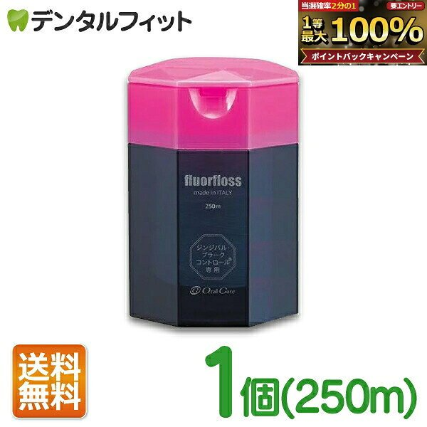
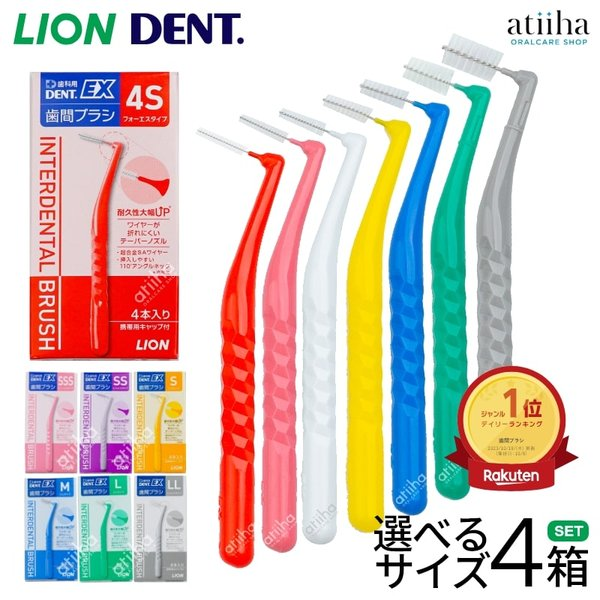
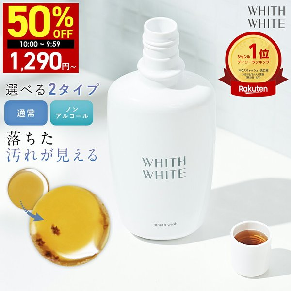
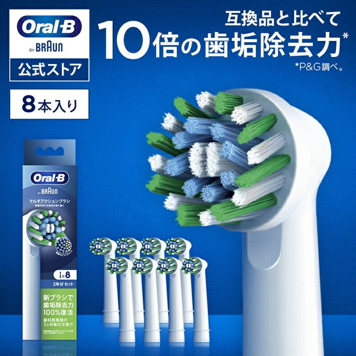
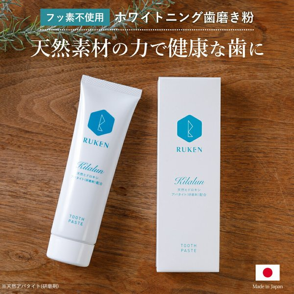

【2026年最新】自宅ケアの質が上がる！電動歯ブラシ＆口腔洗浄器オーラルケア10選
歯のメンテナンスは、通院より毎日の自宅ケアで決まります。電動歯ブラシに替えるだけで歯垢の落ち方が変わり、歯ぐきの状態も安定しやすくなります。
ただし電動歯ブラシだけでは歯間の汚れは落ちません。フロスや歯間ブラシ、口腔洗浄器を組み合わせることで、歯周病や虫歯のリスクを大きく下げられます。
本記事では、楽天市場で人気・高評価の電動歯ブラシ＆口腔ケア用品10選を、実売価格とレビュー評価つきで写真付き紹介します。
- おすすめ10選 スペック・特徴比較表
- BEST 1｜ソニッケアー 3100シリーズ HX3671/33
- BEST 2｜オーラルB iO3 電動歯ブラシ
- BEST 3｜W音波振動ハブラシ ドルツ EW-DP38
- BEST 4｜口腔洗浄器 ジェットウォッシャー ドルツ EW-DJ55
- BEST 5｜コードレス ウォーターフロッサー WF-02
- BEST 6｜フロアフロス 250m（業務用サイズ）
- BEST 7｜デントEX 歯間ブラシ 4箱セット
- BEST 8｜薬用マウスウォッシュ ホワイトニング 300ml
- BEST 9｜オーラルB 替えブラシ マルチアクション 8本入
- BEST 10｜キラルン ホワイトニングペースト 100g
- 【読者負担0円】買わなくても得する無料サービス
- まとめ：オーラルケア10選の選び方
| 順位 | 商品名 | ブランド | 最大の特徴・おすすめ理由 | 総合評価 |
|---|---|---|---|---|
| BEST 1 | ソニッケアー 3100シリーズ HX3671/33 | フィリップス（Philips） | 音波で歯垢を除去 | 4.61 |
| BEST 2 | オーラルB iO3 電動歯ブラシ | ブラウン（Braun） | 丸ブラシで1本ずつ磨ける | 4.57 |
| BEST 3 | W音波振動ハブラシ ドルツ EW-DP38 | パナソニック | W音波振動で歯間まで届く | 4.52 |
| BEST 4 | 口腔洗浄器 ジェットウォッシャー ドルツ EW-DJ55 | パナソニック | 超音波水流で歯間を洗える | 4.51 |
| BEST 5 | コードレス ウォーターフロッサー WF-02 | ウォーターピック（Waterpik） | 口腔洗浄器の定番ブランド | 5.00 |
| BEST 6 | フロアフロス 250m（業務用サイズ） | fluorfloss | 250mの大容量 | 4.70 |
| BEST 7 | デントEX 歯間ブラシ 4箱セット | ライオン（LION） | 超合金ワイヤーで折れにくい | 4.75 |
| BEST 8 | 薬用マウスウォッシュ ホワイトニング 300ml | 薬用マウスウォッシュ | 薬用で口臭ケアに対応 | 4.60 |
| BEST 9 | オーラルB 替えブラシ マルチアクション 8本入 | ブラウン（Braun） | 8本入りで約1年分 | 4.67 |
| BEST 10 | キラルン ホワイトニングペースト 100g | RUKEN | 天然アパタイト配合 | 4.30 |
ソニッケアー 3100シリーズ HX3671/33

音波で歯垢をかき出すフィリップスの電動歯ブラシ。過圧防止機能付きで、強く当てすぎたときに知らせてくれます。8,000円台で買える、電動歯ブラシ入門にちょうどいいモデルです。 楽天市場での実売価格は約8,666円（2026年11月時点）。
- 音波で歯垢を除去
- 過圧防止機能付き
- 8,000円台で始めやすい
- 替えブラシのランニングコストがかかる
オーラルB iO3 電動歯ブラシ

回転式で歯を1本ずつ磨くオーラルBのiO3。丸いブラシが歯面を包み込み、歯と歯ぐきの境目まで磨けます。電動歯ブラシが初めての人向けに調整されたモデルです。 楽天市場での実売価格は約17,380円（2026年11月時点）。
- 丸ブラシで1本ずつ磨ける
- 歯ぐきの境目まで届く
- 初心者向けの設定
- 本体価格が1万7千円台
W音波振動ハブラシ ドルツ EW-DP38

2種類の音波振動を組み合わせたドルツのハブラシ。歯間や歯周ポケットに毛先が入り込みやすい設計で、矯正中の人にも使えます。USB充電で、洗面所のコンセントをふさぎません。 楽天市場での実売価格は約26,975円（2026年11月時点）。
- W音波振動で歯間まで届く
- USB充電で置き場所を選ばない
- 防水で洗面所でも安心
- 価格はセット構成により変わる
口腔洗浄器 ジェットウォッシャー ドルツ EW-DJ55

超音波水流で歯間や歯周ポケットの汚れを洗い流す口腔洗浄器。軽量で持ちやすく、防水なので浴室でも使えます。フロスが苦手な人でも、水の力で歯間ケアを続けられます。 楽天市場での実売価格は約17,983円（2026年11月時点）。
- 超音波水流で歯間を洗える
- 軽量で浴室でも使える
- 矯正中のケアにも向く
- タンクの水の補充は都度必要
コードレス ウォーターフロッサー WF-02

世界的な口腔洗浄器ブランド、ウォーターピックのコードレスモデル。充電式で洗面所に置きやすく、旅行にも持っていけます。水流の強さを段階で変えられるので、初心者でも慣らしやすい。 楽天市場での実売価格は約10,390円（2026年11月時点）。
- 口腔洗浄器の定番ブランド
- コードレスで置き場所を選ばない
- 水流の強さを調整できる
- タンク容量は据置型より小さめ
フロアフロス 250m（業務用サイズ）

250m巻きの大容量デンタルフロス。1回20〜30cm使うので、1本で数か月もちます。ケースから引き出して使うタイプで、切らす心配がほとんどありません。 楽天市場での実売価格は約3,200円（2026年11月時点）。
- 250mの大容量
- 1本で数か月もつ
- 1回ごとに清潔な糸を使える
- 持ち運びには向かないサイズ
デントEX 歯間ブラシ 4箱セット

超合金ワイヤーを使ったライオンの歯間ブラシ。110度の角度で奥歯にも入れやすく、携帯用キャップ付きです。4箱セットなので、家族で使っても当分なくなりません。 楽天市場での実売価格は約1,950円（2026年11月時点）。
- 超合金ワイヤーで折れにくい
- 奥歯に入れやすい角度
- 携帯キャップ付き
- サイズが合わないと歯ぐきを傷める
薬用マウスウォッシュ ホワイトニング 300ml

歯垢・歯石・口臭ケアに対応した薬用マウスウォッシュ。大容量300mlで、毎食後のすすぎに使えます。携帯用の小分けにもでき、外出先での口臭対策にも。 楽天市場での実売価格は約2,580円（2026年11月時点）。
- 薬用で口臭ケアに対応
- 300mlの大容量
- 子どもにも使える
- 刺激が苦手な人は薄めて使う
オーラルB 替えブラシ マルチアクション 8本入

オーラルB用の替えブラシ8本セット。マルチアクションタイプで、歯垢除去と歯ぐきのマッサージを兼ねます。8本あれば約1年分の交換サイクルを確保できます。 楽天市場での実売価格は約8,338円（2026年11月時点）。
- 8本入りで約1年分
- マルチアクションタイプ
- 公式ストアの正規品
- 対応する本体を確認する必要がある
キラルン ホワイトニングペースト 100g

天然アパタイト配合のホワイトニング歯磨き粉。毎日の歯磨きに取り入れるだけで、歯の表面の汚れを落としやすくします。1,298円で始められる、自宅セルフホワイトニングの入門品です。 楽天市場での実売価格は約1,298円（2026年11月時点）。
- 天然アパタイト配合
- 1,298円で始めやすい
- 毎日の歯磨きに足すだけ
- 即効性はなく継続が必要
この記事の商品を買う前に、まずは無料で得する選択肢をチェック。どれも登録・利用は0円で、無料期間中に解約すれば料金はかかりません。読みたい雑誌がある人、ポイントを貯めたい人、アンケートなら気軽という人、それぞれに合うものを選べます。
初回31日無料・無料期間中に解約すれば0円 → 楽天ポイントモール｜登録無料で毎日ポイ活
買い物なしでもポイントが貯まる無料サービス → 楽天インサイト｜アンケートに答えてポイント
登録無料・すきま時間のアンケートで貯まる → 楽天カード｜年会費永年無料
新規発行・年会費ずっと0円 →
4つのサービスの違いと使い分けは「出費0円で得する！買わずにポイントが貯まる無料サービス厳選4選」でまとめています。
💡 まとめ：オーラルケア10選の選び方
自宅ケアは、電動歯ブラシで歯面を、フロスや口腔洗浄器で歯間を、という2段構えが基本です。最初の一台は過圧防止機能つきのモデルを選ぶと、力の入れすぎで歯ぐきを傷める失敗を避けられます。
楽天市場では「5と0のつく日」や「お買い物マラソン」などのキャンペーンに合わせて購入すると、ポイント還元が最大化してお得に手に入ります。ぜひチェックしてみてくださいね。